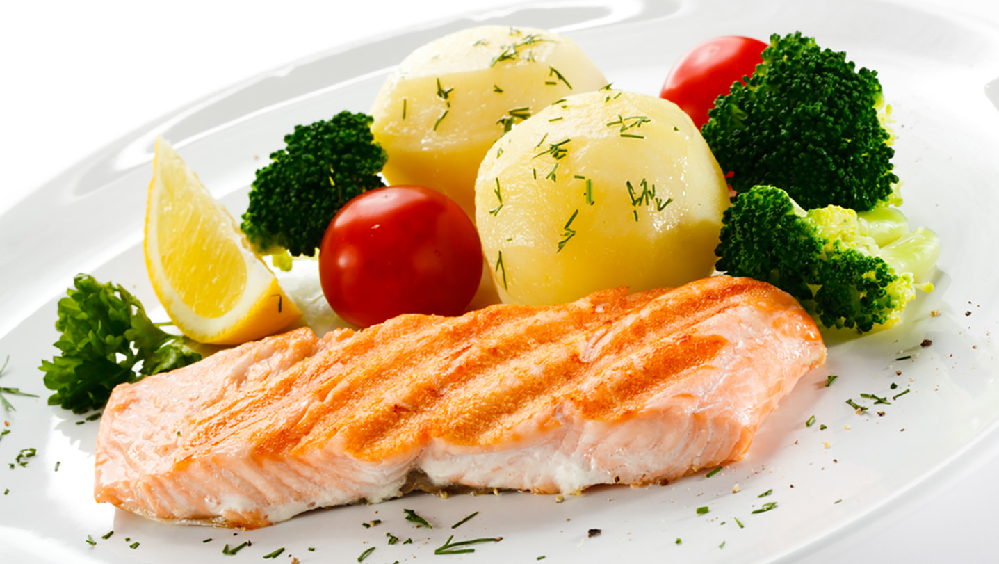
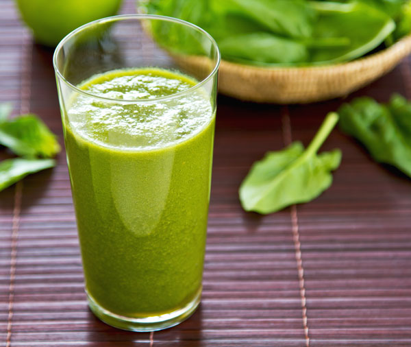

Comer saludable
Es vivir saludable
Historial
- Johanna Bermudez
- Valentina Guerero
- Arnulfo Perdomo
- Sebastian Bernal
- Danilo Garay
- Andrea Retrepo
Un sabroso Pescado Asado
19/08/2017
Probablemente lo has escuchado cientos de veces: el pescado es realmente bueno para ti. Es alto en proteína pero también bajo en grasa, lo que lo convierte en una excelente alternativa frente a la carne de cerdo o la carne roja. Los pescados de carne blanca como la tilapia son especialmente bajos en grasa, mientras que los pescados grasos como el salmón tienen alta concentración de Omega-3.Aún cuando elegir pescado no es fácil, cocinarlo siempre puede ser súper simple. Una de las maneras más fáciles y saludables es hornearlo en papel pergamino, pero asarlo a la parrilla es una otra opción fácil para cuando quieres algo rápido y crujiente. Para hacer un adobo rápido y fácil, prueba mezclando aceite, salsa de soya, ajo, mostaza Dijon y cebollines en proporciones según tu gusto. (Cuanta más mostaza, más picante, cuanta más salsa de soya, más salado, etc.) Esto funcionará básicamente con todo.
 Sebastian: Gran idea para el almuerzo
Sebastian: Gran idea para el almuerzo- Arnulfo: Facil de preparar y muy rico
 Andrea: Me gustaria saber con que clase de pescado se puede preparar la receta
Andrea: Me gustaria saber con que clase de pescado se puede preparar la receta
Un súper Smoothie
20/08/2017
Los smoothies son una manera fácil y deliciosa para condensar muchos nutrientes a la vez. Ya sea un smoothie detox verde, un smoothie de frutas de la estación o un smoothie muy simple de tres ingredientes, la clave es asegurarte de que tienes una combinación de frutas, vegetales y proteína, para que sea bien balanceado Y sabroso.Siéntete libre para divertirte con el líquido que le agregues. El agua es magnífica pero también la leche normal o sus sustitutos. Pero no hagas caso de las recetas que te piden que agregues azúcar, sé precavido con los jugos que usualmente son altos en azúcar y con la proteína en polvo, pues algunas veces se han encontrado en ella altos niveles de toxinas como arsénico, cadmio y plomo.
- Valentina: Muy nutritivo, ayuda mucho para la piel
- Johanna: Es un jugo bastante nutritivo y muy facil de preparar
- Danilo: Es excelente para acompañar cual tipo de comida